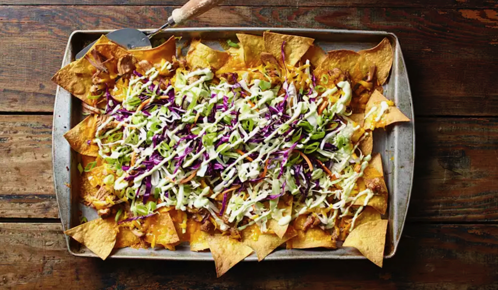

Loaded Nachos - Yum!

One of my favourite comfort foods. Easy to make, crunchy and delicious.
Ingredients
- cooking spray
- 1 (18 oz) package tortilla chips
- 1-1/2 pounds cooked, Mexican-seasoned ground beef
- 1 (15 ounce) can black beans, drained
- 3 medium jalapeno peppers, thinly sliced
- 3 cups pico de gallo
- 1 (16 ounce) package shredded medium Cheddar cheese
- 3 cups queso blanco dip, warmed
- 1/4 head iceberg lettuce, shredded
- 1 cup sour cream
- 1 tablespoon water, or as needed
- 2 stalks scallions, chopped
Directions
- Preheat oven to 400 degrees F (200 degress C). Grease a baking sheet with cooking spray.
- Arrange a layer of tortilla chips on the tray. Sprinkle 1/2 of the cooked
beef in a layer over the chips (don't drown the chips!)
then layer with 1/3
of the beans, 1/3 of the jalapeno peppers, 1/3 of the pico de gallo, and
1/2 of the Cheddar cheese;
drizzle 1/3 of the queso blanco over top.
Repeat layers once more, starting with chips and
ending with queso
blanco. Cover with aluminum foil.
- Bake in the preheated oven for 20 minutes. Remove the foil and bake for 5 more minutes.
- Remove from the oven the transfer nachos to a platter. Top with shredded lettuce and remaining beans,
jalapeno peppers,
and pico de gallo.
- Stir sour cream with just enough water to thin slightly; drizzle over the nachos. Drizzle remaining
queso blanco over top
and sprinkle with scallions. Arrange remaining chips around the edges of
the platter.